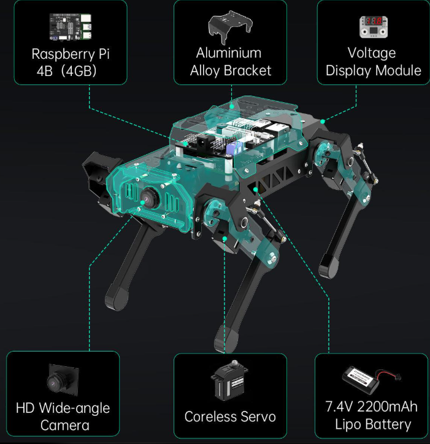
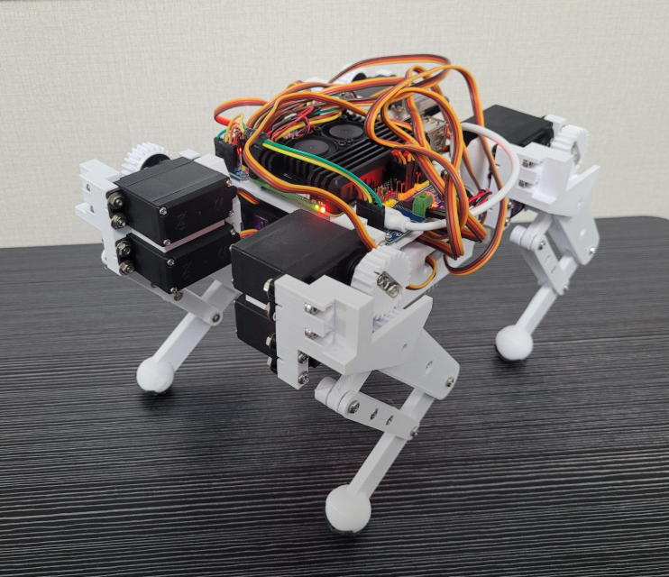
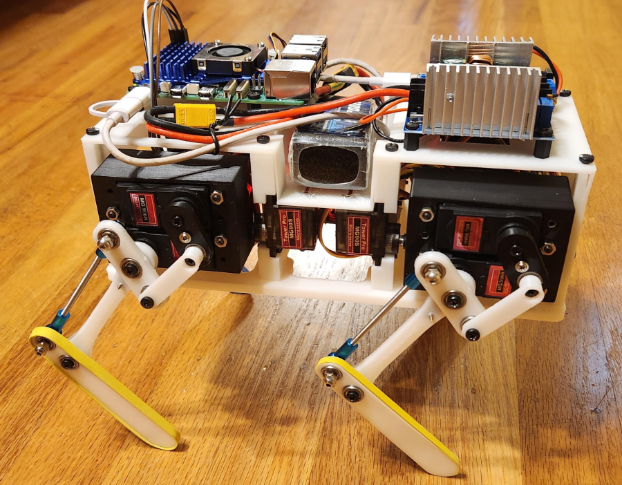
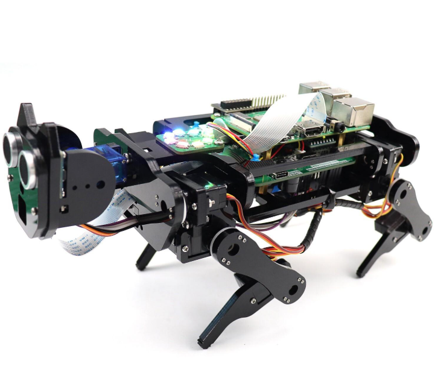

Stand and Sit
Move the legs into calibrated standing and sitting positions.
VJAYA ROBOTICS PROJECT
RASPBERRY PI ROBOTICS PROJECTBuild a quadruped robot dog using Raspberry Pi, 12 servo motors and a PCA9685 servo driver. Control the robot to stand, sit, walk, turn and detect nearby obstacles.
Explore ProjectPROJECT OVERVIEW
This Raspberry Pi Robot Dog uses a Raspberry Pi as its main controller. The robot has four legs, with three servo motors controlling each leg.
A PCA9685 servo driver generates the control signals for the servo motors. Python software controls the individual joints and coordinates the movements of all four legs.
The robot can be programmed to stand, sit, walk forward and backward, turn left and right, and detect obstacles using a distance sensor. Voice control and camera-based AI can be added as optional features.




WHAT IT CAN DO
Move the legs into calibrated standing and sitting positions.
Coordinate all four legs to move the robot forward.
Move the robot backward using a coordinated leg movement.
Coordinate leg movements to turn the robot left or right.
Detect nearby obstacles using a distance sensor.
Optionally control the robot using simple voice commands.
HARDWARE REQUIREMENTS
SOFTWARE REQUIREMENTS
The Python program is organized into separate files for servo control, leg control, gait generation, movement, obstacle detection and robot commands.
HOW IT WORKS
HARDWARE CONNECTIONS
| Component | Component Pin | Raspberry Pi Connection |
|---|---|---|
| PCA9685 | VCC | Raspberry Pi 3.3V |
| PCA9685 | GND | Raspberry Pi GND |
| PCA9685 | SDA | GPIO2 / Physical Pin 3 |
| PCA9685 | SCL | GPIO3 / Physical Pin 5 |
| PCA9685 | V+ | External servo power supply |
| Servos | Channels 0–11 | 12 servo motors |
| HC-SR04 | TRIG | Configured GPIO output |
| HC-SR04 | ECHO | GPIO input through voltage divider |
PROGRAM STRUCTURE
Main program and robot startup.
Servo channels and robot settings.
PCA9685 initialization and servo control.
Control individual leg joints.
Generate coordinated walking sequences.
Forward, backward and turning functions.
Distance measurement and obstacle detection.
Robot commands and movement coordination.
PROGRAMMING
Download the Raspberry Pi Robot Dog project files.
main.py
Download Code ↓ 📄config.py
Download Code ↓ 📄servo_driver.py
Download Code ↓ 📄leg_control.py
Download Code ↓ 📄gait.py
Download Code ↓ 📄movement.py
Download Code ↓ 📄obstacle_detection.py
Download Code ↓ 📄robot_controller.py
Download Code ↓PROJECT DEMONSTRATION
Raspberry Pi Robot Dog Demonstration
Add your actual robot photograph or walking demonstration video here.IMPORTANT INFORMATION